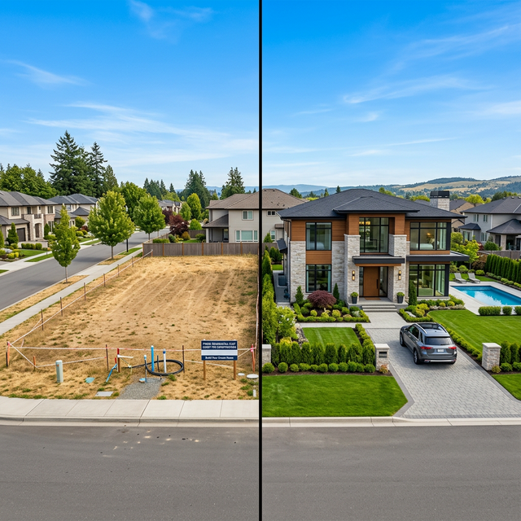

How to Choose Between a Plot and a Pre-built Villa

One of the most frequent dilemmas for home buyers in Indore is whether to purchase a residential plot and build a custom home or opt for a move-in ready villa. Both paths offer distinct advantages depending on your goals and timeline.
The Freedom of a Plot
Purchasing a plot gives you complete creative control. From the layout and architectural style to the smallest interior details, you can build a home that is truly unique to your family's needs. It's often seen as a better long-term investment as land values typically appreciate faster than built-up structures.
The Convenience of a Villa
A pre-built villa offers the ultimate convenience. You save months (or years) of construction management, dealing with contractors, and navigating building permits. Modern villas in premium townships also come with integrated amenities and a ready community.